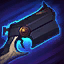

Jhin canaliza, transformando a Sussurro em um mega-canhão de ombro. Ela é capaz de fazer 4 super disparos com extremo alcance que atravessam tropas e monstros, mas que param no primeiro campeão atingido. A Sussurro mutila os inimigos atingidos, o que reduz sua velocidade e aumenta o dano de execução. O 4º disparo é feito com perfeição, de poder épico e garante um acerto crítico.

